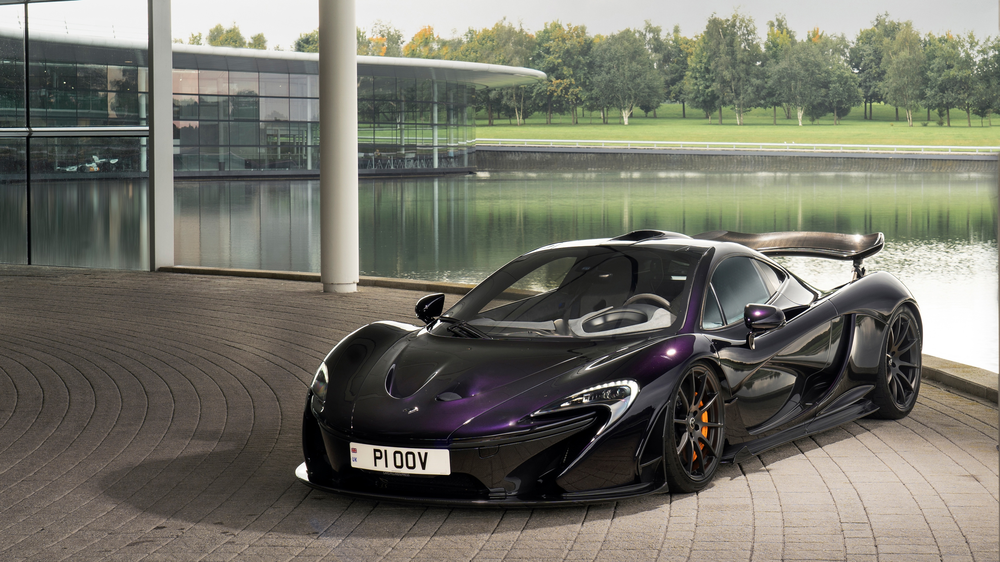
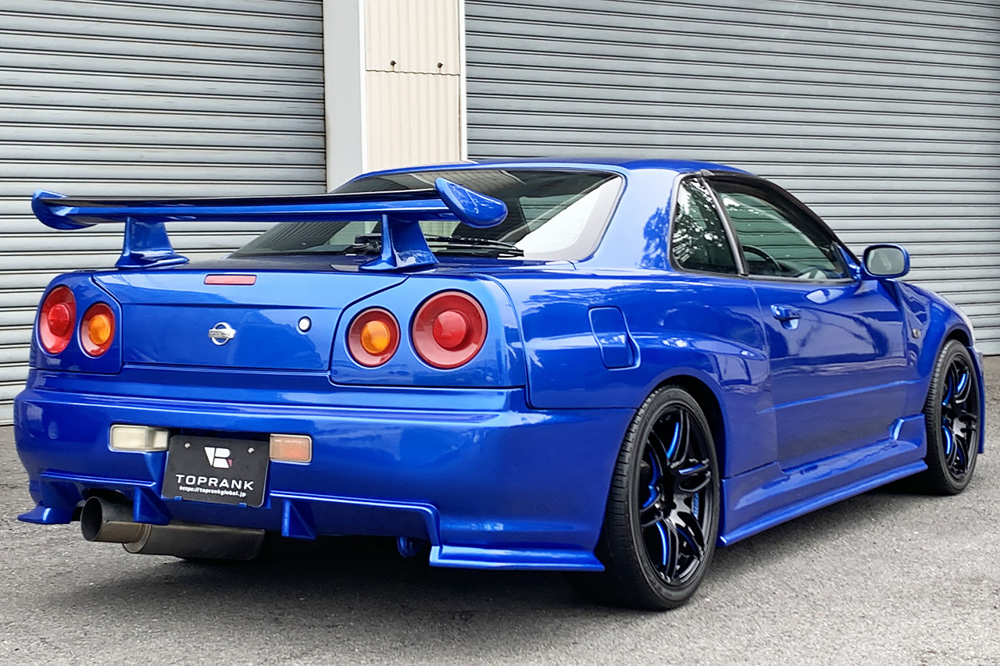
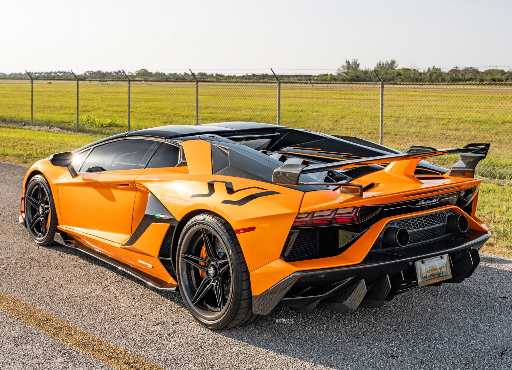
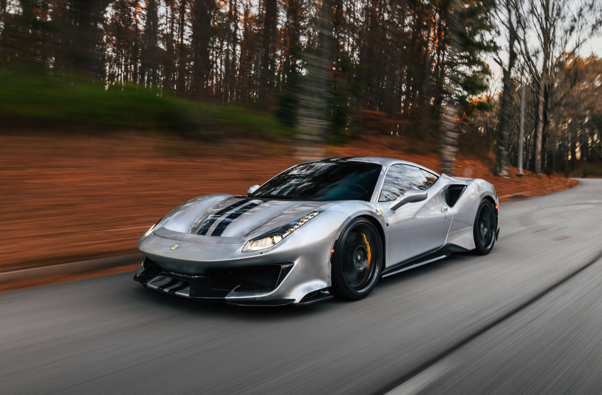
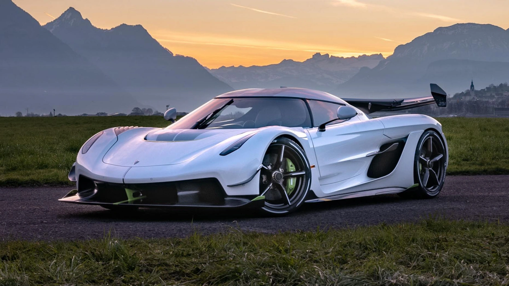
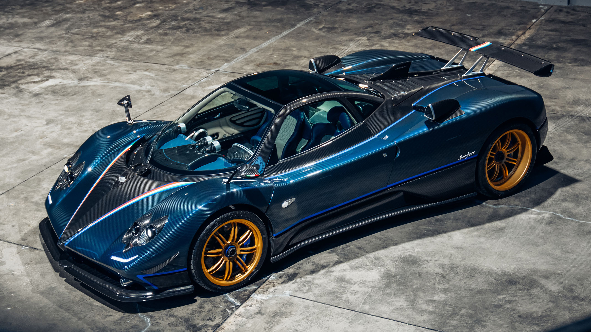
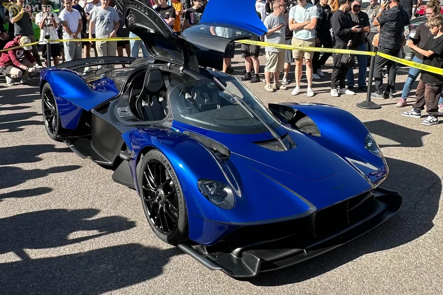
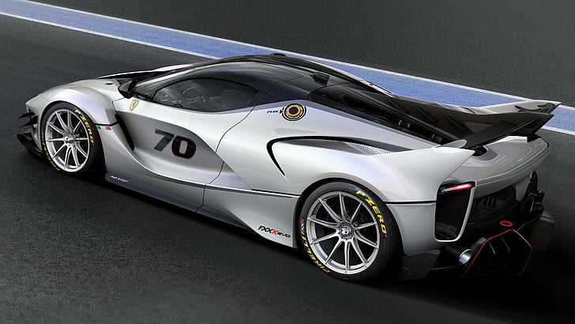

Le garage photo
Découvrez en images une sélection de voitures emblématiques. Une rétrospective visuelle qui met en valeur l'esthétique, les lignes aérodynamiques et le caractère unique de chaque légende automobile :









